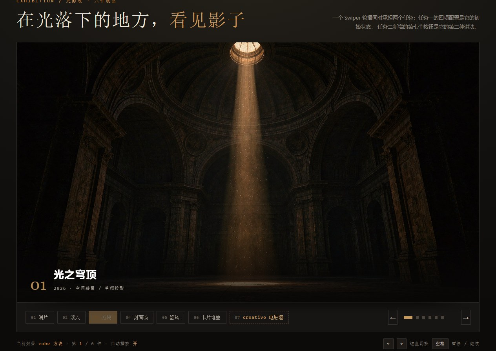
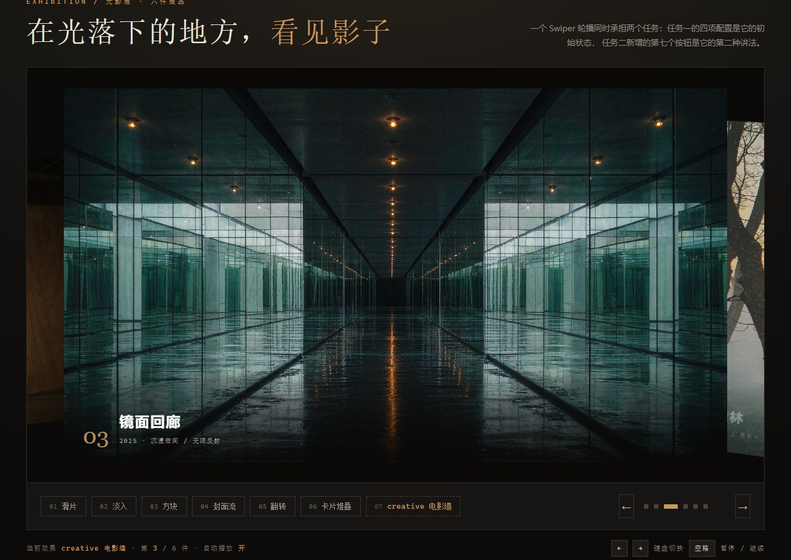

任务一 · 提示词工程：让 AI 听懂需求
PROMPT ENGINEERING上面那个轮播的初始状态，就是需求里那四条。这一节不写新代码，只记录两轮提示词怎么把需求"翻译"成参数。
| 需求原话 | 落到哪个参数 | 取值 |
|---|---|---|
| ① 无循环 | loop | false（不写就是 false，但第一版我写了 true） |
| ② 3.2 秒自动翻页，手动操作后不停止 | autoplay.delay + autoplay.disableOnInteraction | 3200 + false |
| ③ 圆点分页器可点击 | pagination.clickable | true |
| ④ 初始效果为 cube | effect + cubeEffect | 'cube'，并给定阴影参数 |
第 1 轮提示词 ROUND 01
"帮我做一个 Swiper 轮播，六张图，自动播放，带圆点分页器，用立方体效果，好看一点。"
结果：loop 默认为 true、autoplay 只写了 delay、pagination 没写 clickable、手动滑动后自动播放直接停。四条需求里错了三条。
第 2 轮提示词 ROUND 02
把需求逐条编号，并且明确"用参数名对齐、默认值不要替我决定"：
生成 new Swiper('#hwySw4', {…})，四条必须同时满足：
1. 关掉循环，到第六张后不再回到第一张；
2. autoplay 间隔 3200 毫秒，用户手动拖动之后仍要继续自动翻页；
3. 分页器的圆点要能点击跳转；
4. 初始效果为 cube，并给出 cubeEffect 的阴影设置。
const swiper = new Swiper('.zjq_stage', { effect: 'cube', // ④ 初始效果 loop: false, // ① 无循环 speed: 700, autoplay: { delay: 3200, // ② 3.2 秒 disableOnInteraction: false // ② 手动后不停止 }, pagination: { el: '.zjq_stage-dots', clickable: true // ③ 圆点可点击 }, cubeEffect: { shadow: true, slideShadows: true, shadowOffset: 22, shadowScale: 0.92 } });
| 需求 | 怎么验的 | 结论 |
|---|---|---|
| 无循环 | 连点下一张到第 6 件，再点 | ✓ 停在 06，按钮不再前进 |
| 3.2 秒自动 + 手动后不停 | 拖动后松手，掐表看是否继续 | ✓ 松手约 3.2 秒后自动翻 |
| 圆点可点击 | 直接点第 4 个圆点 | ✓ 跳到 04，圆点变长 |
| 初始 cube | 刷新页面看第一屏 | ✓ 立方体三面可见 |


Q1第一版提示词漏掉了哪个需求？
disableOnInteraction 默认 true，脚本一碰就停；loop 我压根没提，AI 按经验给了 true；分页器我写了"带圆点"，但没写"可点击"。四条里只有 cube 是对的。
Q2你是怎么在第二轮里"说清楚"的？
disableOnInteraction: false）；三是加一句"默认值不要替我决定"，把 AI 的默认推断权收回来。
Q3AI 第一次给的代码错在哪？
loop: true，与"无循环"完全相反；② autoplay 只有 delay，缺 disableOnInteraction: false，手动操作即停；③ pagination 只有 el，缺 clickable: true，圆点成了纯装饰。三处都是"省略参数 → 走默认值"造成的。
任务二 · creative 仿写：AI 教你课堂没讲的第 7 种
CREATIVE EFFECT
课堂上讲了 fade / cube / coverflow / flip / cards 和默认的 slide，第七种 creative 没讲。下面这台调参台把 prev / next 拆成 6 根滑杆，拖一下就能看见卡片怎么动，右侧配置代码实时跟着变。它是唯一一个可以用一组 transform 把"非当前页"摆到任意位置的模式——所以能被拼成一面电影选片墙。
creativeEffect: {
// 上一张：缩小、往左推出画面，带角度压暗
prev: {
shadow: true,
translate: ['-85%', 0, -320], // x / y / z
origin: 'right center',
rotate: [0, 12, -6], // 绕 x / y / z 轴的角度
opacity: 0.5,
scale: 0.86
},
// 下一张：留在画面右侧，只露出一格，像待选的胶片
next: {
translate: ['85%', 0, -200],
origin: 'left center',
rotate: [0, -12, 6],
opacity: 0.92,
scale: 1
}}
| 属性 | 管的是谁 | 说明 |
|---|---|---|
prev | 当前张左边那一张 | 它退到左边、缩小、压暗，形成"已经看过的胶片" |
next | 当前张右边那一张 | 它从右侧贴着画面边缘，略微放大，形成"待选的下一格" |
translate | 位移，三个值 = x / y / z | 百分比相对 slide 自身的宽高，数字相对父容器 |
rotate | 旋转，三个值 = 绕 x / y / z 轴 | 单位是 deg，写成 20 就是 20 度 |
拖动右侧滑杆，卡片姿态实时变化；松手会按新参数重建一次， 保证画面和右下角生成的代码完全一致。也可以直接拖卡片或点箭头翻页。
prev 退场
next 进场
prev 摆的是"已经翻过去那张"，next 摆的是"还没轮到那张"；
X 位移写成百分比（相对 slide 自身宽度），Z 是像素级纵深，倾斜角就是 rotate[2]。
把倾斜角拖到 20°，退场那张立刻歪过去 —— 这就是答辩里"改一个数值让卡片转 20 度"的现场操作。
prev 的 transform 控制什么 PREV
控制"左邻"这张卡片的位置和姿态：往左退多远（translate 的负百分比）、要不要缩小（scale）、要不要压暗（opacity）、带多大角度（rotate）。它只在 creative 模式下生效，切回 slide 就完全不参与。
next 的 transform 控制什么 NEXT
控制"右邻"这张：往右推出多少（正百分比）、放大还是缩小、透明度、旋转角度。想做电影墙那种"下一格从边上探进来"的感觉，关键就是 next 的 translate 不要给到 100%，留一点在画面里。
Q1transform 里的百分数是相对谁的？
translate: ['-26%', 0, -260]，横向位移量是这张 slide 宽度的 −26%；112% 就是把自己整个推到画面外再多出 12%。而第三个值 -260 不带单位，是像素，属于 3D 的 z 轴，负值往屏幕里退。
Q2改一个数值让卡片转 20 度，怎么验证？
prev 的「倾斜角」从 −8° 拖到 20，也就是 rotate: [0, 0, 20]，退场那张立刻歪 20 度；单位是度，不写 deg。注意 rotate 数组的顺序是 x / y / z，写错位置会变成绕横轴翻转，卡片会像躺倒一样，不是平面内倾斜。
Q3七个按钮轮着点一圈，轮播变高了、照片越来越黑，为什么？
destroy 后重建，但 destroy 只回收实例和行内样式，效果模块自己插进 DOM 的装饰节点它不管。cube 会往 wrapper 里塞一个 .swiper-cube-shadow 占位层，它的 height:100% 把重建后的舞台撑到两倍高（实测 660px → 1171px）；coverflow / flip / cards 给每张 slide 叠的 .swiper-slide-shadow-* 每切一轮多一层，切六七次照片就明显压暗了。所以重建前要先把这两类节点删掉——这就是 build() 开头那段清理代码的由来。
Q4调参台和页面顶部的大轮播是同一个实例吗？
new Swiper() 出来的实例。顶部那个负责展览和任务一、任务三的键盘控制；任务二这台只服务本节预览，绑定 #zjq_lab_swiper，分页器和箭头也都指向自己的 id，两边翻页互不干扰。调参台还刻意关掉了 keyboard，否则按 ← → 时两个实例会一起翻。滑杆松手会 blur()，把焦点还给页面，任务三的方向键才不会被滑块吃掉。
任务三 · 综合创作：第六件展品与键盘控制
SIXTH WORK & KEYBOARD两件事：把"爱达·魔都号"做成第六件展品补进轮播；再挑一个课上没讲的能力——这里选键盘控制，让 ← → 直接翻页，空格暂停自动播放。
爱达·魔都号
首艘国产大型邮轮，2024 年 1 月 1 日从上海首航。船体侧面的彩绘涂装是它最好认的地方， 夜里靠港时，几百扇舷窗的暖光会一整排在江面上铺开——这也是它被放进"光影展"的原因。
keyboard: {
enabled: true,
onlyInViewport: false, // 轮播不在视口里也响应
pageUpDown: false // 关掉 PageUp/PageDown，避免和页面滚动打架
}
这一块和页面顶部的轮播是同一个实例。滚到这里按 ← →， 缩略图、展品名和编号会立刻换——不用滚回页面顶端，也能确认按键真的接管了轮播。 控制台里的两个箭头按钮等价于按方向键，按 空格 则是暂停 / 恢复自动播放。
怎么试 TRY IT
按键盘 ← →，页面顶部的轮播跟着翻，同时下面这块控制台立刻换图换名；点控制台里的两个按钮效果一样。按 空格 暂停或恢复自动播放，"自动播放"的状态会在开 / 关之间切。
Q1这段代码什么意思？
keyboard.enabled 打开键盘监听；onlyInViewport: false 表示不管轮播有没有滚进视口都接管按键，否则页面往下滑到第二节时按方向键就没反应；pageUpDown: false 是为了不和浏览器的翻页键冲突。空格暂停是我在它外面另写的监听。
Q2AI 第一次给的哪里不对，你改了什么？
keyboard: true，在 Swiper 11 里这个写法不报错但也不生效——它要的是对象。onlyInViewport 默认 true，导致滚到页面下方按键无反应，我改成了 false。另外它把 PageUp/PageDown 也接管了，和页面滚动打架，我关掉了。
Q3新参数的作用？
onlyInViewport: false 决定监听范围（元素级还是全局）；pageUpDown: false 决定是否把翻页键也算作切换键；disableOnInteraction: false（任务一）决定手动操作后自动播放要不要继续。三个都是"开关型"参数，不改数值只改行为。
Q4现场把 delay 改成指定值，会怎么变？
delay 是毫秒，指自动翻页的间隔。改成 1000 就是每 1 秒翻一张，节奏明显变急；改成 8000 就变成慢速展示。它在初始化时读一次，改完要销毁重建（页面上切效果就是这个过程）才生效；如果只想临场改，可以调 swiper.params.autoplay.delay = 1000，下一轮立刻按新值走。
Q5之前按方向键感觉"没反应"，问题出在哪？
① 焦点被输入框抢走。Swiper 的键盘处理里有这么一句判断：只要
document.activeElement 是 input / textarea，整段键盘逻辑直接 return。任务二调参台里的滑杆都是 input，拖过一次，焦点就留在滑块上，之后按方向键改的是滑块的值，轮播一动不动。现在滑杆松手就 blur()，把焦点还回去。② 翻了但看不见。轮播在页面顶端，人在任务三这一节按键，轮播确实翻了，可屏幕上是任务三，等于白翻。所以加了上面这块控制台，同一个实例、同步显示，按键有没有生效一眼就能确认。
与 AI 的关键对话记录
PROMPTS & ANSWERS按任务拆分，只留真正改变过代码的那几轮。左边是提问，右边是我采纳或推翻的部分。
AI 给出 loop: true、autoplay: { delay: 3000 }、pagination: { el }。 问题：三条需求被默认值吃掉，只有 cube 是对的。
这一轮才拿到正确配置，四项实测全部通过（见上面两张验证截图）。
要点：prev / next 分别描述当前张左右两侧卡片的位移、旋转、缩放、透明度；百分比相对 slide 自身尺寸，第三个位移值是像素级的 z 轴纵深。
要点：必须写成对象；onlyInViewport 默认 true 会让轮播离开视口后失灵，改成 false；pageUpDown 会和页面滚动冲突，关掉。